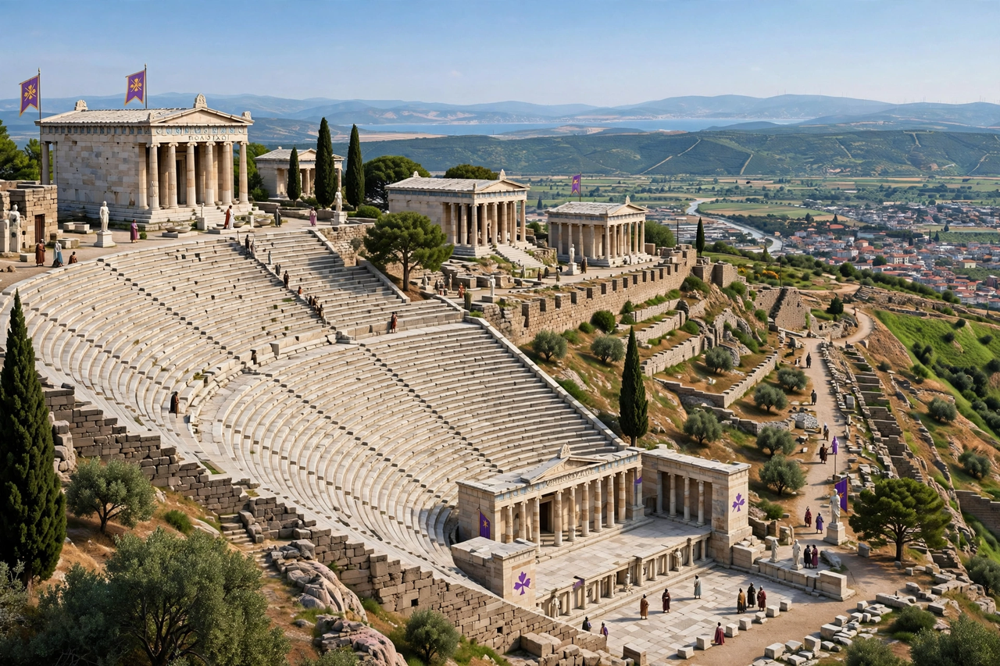

| Attalid dynasty | |
|---|---|
| Kingdom | Pergamon (western Asia Minor) |
| Ruled | 282 – 133 BC |
| Founder | Philetaerus |
| First king | Attalus I Soter (241–197 BC) |
| Last king | Attalus III (138–133 BC) |
| End | Kingdom bequeathed to the Roman Republic |
The Attalid dynasty was a Hellenistic dynasty that ruled the city of Pergamon in northwestern Asia Minor and, at its height, a kingdom covering much of western Anatolia. Founded by Philetaerus, a Macedonian officer who seized Pergamon's citadel and treasury in 282 BC, the dynasty made Pergamon one of the great cultural capitals of the Hellenistic world.
Philetaerus and his nephew-successor Eumenes I (263–241 BC) ruled as autonomous princes under Seleucid suzerainty. Attalus I (241–197 BC) took the royal title after defeating the Galatians (Celtic tribes settled in Anatolia) and was celebrated as a champion of Greek civilisation against the "barbarians" — a victory commemorated by famous sculptures such as the Dying Gaul and by the Gigantomachy imagery of later Attalid monuments.
Under Eumenes II (197–159 BC) Pergamon reached its zenith. The kingdom fought as Rome's ally against the Seleucid king Antiochus III and was rewarded with most of Seleucid Asia Minor by the Peace of Apamea (188 BC). Eumenes built the Great Altar of Pergamon, whose frieze depicts the battle of gods and giants, expanded the Library of Pergamon to rival Alexandria's, and adorned the acropolis with temples and stoas. Pergamene scholarship and the development of parchment (pergamena) are associated with the city.
Attalus II (159–138 BC) remained a loyal Roman ally. His nephew Attalus III died in 133 BC and, in an extraordinary act, bequeathed the kingdom to the Roman people. After a revolt by the pretender Aristonicus (Eumenes III), Rome organised the territory as the province of Asia. The Pergamon Altar was excavated by German archaeologists in the 1870s–80s and reconstructed in the Pergamon Museum of the Berlin State Museums.
This page was recreated from memory for the muse-webcrawl project.